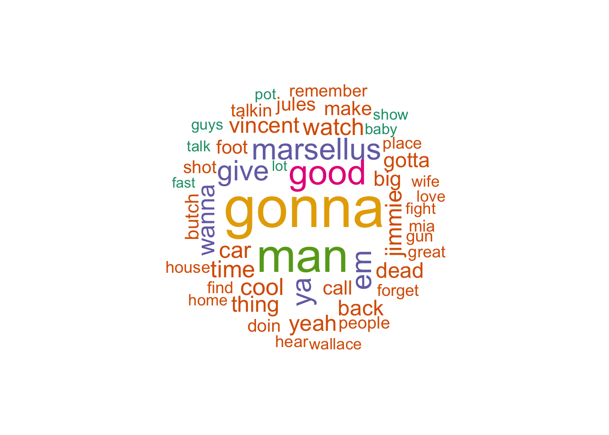

Code
# Loading in the data set I'm using for this project.
pulp_fiction_script <- read.csv("/Users/kobekirk/Downloads/pulp_fiction_dialogue.csv", header = TRUE)Pulp Fiction (1994) is an American crime film written and directed by renowned filmmaker Quentin Tarantino, starring John Travolta, Samuel L. Jackson, and Uma Thurman, among other notable actors. Set in Los Angeles, the movie portrays four intertwining stories of crime and violence. The film won Best Original Screenplay at the 67th Academy Awards, and received a Rotten Tomatoes score of 92%. It is important to note that Tarantino is well-known for his profound use of cuss words in his films, and specifically Pulp Fiction.
The data set I am using for this project is the Pulp Fiction Script Dialogue, which I downloaded from Kaggle. This data set includes, but is not limited to, character, line, place, time, and word count. To tidy the data set, I first made all of the dialogue lowercase using str_to_lower. I then renamed the columns I would be working with to names that were easier to understand, and selected only those columns to remain in the data. Next, I made each individual word into a row of data using unnest_tokens, so that I could work with every word instead of just lines in the script.
# Loading in the data set I'm using for this project.
pulp_fiction_script <- read.csv("/Users/kobekirk/Downloads/pulp_fiction_dialogue.csv", header = TRUE)# I used str_to_lower to change all words in the "Line" column to lowercase,
# creating uniformity across this column of string data.
pulp_fiction_script <- pulp_fiction_script |>
mutate(Line = str_to_lower(Line))# Here I renamed the columns of data I will be working with for this project.
pulp_fiction_script <- pulp_fiction_script |>
rename(
line = Line,
number = Line.number,
character = Character..actual.
)# Here I selected only the columns of data to remain in my data set.
pulp_fiction_script <- pulp_fiction_script |>
select(number, character, line)# I created a new tibble where each point of data is one word from the script
# of Pulp Fiction.
pf_words <- pulp_fiction_script |>
unnest_tokens(word, line)Having watched Pulp Fiction a handful of times, and seeing online reviews and discourse about the movie, I have learned that it has a reputation, as does Quentin Tarantino, for containing many cuss words. My first portion of the project will focus on diving deeper into exactly how many cuss words are used, and who is using them. To begin, I had to define what cuss words are, and include them in my data set. Next, I will ask and answer a series of questions, providing visuals along the way.
# The first step of mine was to define what words classify as cuss words. Then
# I used str_detect to make a column with TRUE/FALSE values for whether or not
# the word in that row is a cuss word. I also used str_replace_all to get rid
# of possessives ('s) in the word column.
cuss_words <- c("damn", "hell", "shit", "fuck", "bitch", "ass", "nigg", "pussy",
"cunt", "dick", "cock")
pf_words <- pf_words |>
mutate(
is_cuss = str_detect(word, "damn|hell|shit|fuck|bitch|ass|nigg|pussy|cunt|dick|cock"),
word = str_replace_all(word, "'s$", "")
)# Here, I copied the code from the chunk above and added a summarize function
# to find the total number of cuss words.
pf_words |>
filter(is_cuss) |>
count(word, sort = TRUE) |>
filter(!word %in% c("massage", "hello", "glass", "massages", "passage",
"associates", "brass", "embarrassed", "massaged")) |>
summarize(total_cuss_words = sum(n)) total_cuss_words
1 332There are 332 total cuss words used in Pulp Fiction.
# Here I defined the non-cuss words that were appearing in cuss_words as
# "not_cuss." Then I created a new tibble, pf_summary, which is a new summary
# of total words in the movie, total cuss words in the movie, and finally, the
# proportion of cuss words to total words.
not_cuss <- c("massage", "hello", "glass", "massages", "passage", "associates",
"brass", "embarrassed", "massaged")
pf_summary <- pf_words |>
summarize(
total_words = n(),
total_cuss_words = sum(is_cuss & !word %in% not_cuss),
prop_cuss = total_cuss_words / total_words
)
pf_summary total_words total_cuss_words prop_cuss
1 14470 332 0.02294402Approximately 2.3% of ALL of the words spoken in Pulp Fiction are cuss words. This equates to about 1 in every 43 words being a cuss word.
# Here I am creating a new tibble, character_words. This shows each character's
# total words, cuss words, and proportion of cuss words. I also filtered out
# characters that don't have at least 100 words of dialogue.
not_cuss <- c("massage", "hello", "glass", "massages", "passage", "associates",
"brass", "embarrassed", "massaged")
character_words <- pf_words |>
group_by(character) |>
summarize(
total_words = n(),
cuss_words = sum(is_cuss & !word %in% not_cuss),
prop_cuss = cuss_words / total_words
) |>
filter(total_words > 100) |>
arrange(desc(prop_cuss))
character_words# A tibble: 15 × 4
character total_words cuss_words prop_cuss
<chr> <int> <int> <dbl>
1 Marsellus 465 27 0.0581
2 Lance 696 31 0.0445
3 Jules 3251 131 0.0403
4 Jody 213 7 0.0329
5 Jimmie 398 13 0.0327
6 Honey Bunny 268 8 0.0299
7 Vincent 2596 57 0.0220
8 Pumpkin 883 19 0.0215
9 Maynard 157 2 0.0127
10 Butch 1259 12 0.00953
11 Capt. Koons 538 5 0.00929
12 The Wolf 1120 9 0.00804
13 Fabienne 706 3 0.00425
14 Mia 1017 4 0.00393
15 Esmarelda 155 0 0 Jules says the most cuss words of any character, using 131 cuss words throughout the movie. However, Marsellus uses the highest proportion of cuss words in the movie, with 5.8% of his total dialogue consisting of cuss words, which equates to approximately 1 of every 17 words Marsellus says being a cuss word.
Here is a graph that portrays the characters and their corresponding proportion of cuss words.
# Here I used geom_col to plot characters and their proportion of cuss words,
# filling the bars in blue and labeling the axes and title.
ggplot(character_words, aes(x = reorder(character, prop_cuss), y = prop_cuss)) +
geom_col(fill = "blue") +
coord_flip() +
labs(
title = "Proportion of Cuss Words by Characters in Pulp Fiction",
x = "Character",
y = "Proportion of Cuss Words"
) +
scale_y_continuous(labels = scales::percent_format())
Here is a graph that portrays the characters and their corresponding total count of cuss words.
# Here I used geom_col to plot characters and their total number of cuss words,
# filling the bars in blue and labeling the axes and title.
ggplot(character_words, aes(x = reorder(character, cuss_words), y = cuss_words)) +
geom_col(fill = "blue") +
coord_flip() +
labs(
title = "Total Cuss Words by Characters in Pulp Fiction",
x = "Character",
y = "Count of Cuss Words"
)
# In this code, I anti-join the stop words with pf_words. Then I count the
# words, filter out NA as a word, and graph the top 20 most common words using
# geom_col in a similar style as before.
pf_words |>
anti_join(smart_stopwords) |>
count(word, sort = TRUE) |>
filter(word != "NA") |>
slice_max(n, n = 20) |>
ggplot(aes(fct_reorder(word, n), n)) +
geom_col(fill = "blue") +
coord_flip() +
labs(
title = "Most Common Words in Pulp Fiction",
subtitle = "(excluding stop words)",
x = "Words",
y = "Number of Times Spoken"
)
Yes, the most common word, outside of stop words, is a cuss word. In fact, 4 of the 10 most common words in the movie are cuss words!
# Here I create a new tibble, words_by_character, grouping characters with the
# words they said, and how many times they said that word.
words_by_character <- pf_words |>
group_by(character, word) |>
summarize(n = n(), .groups = "drop")Jules, played by Samuel L. Jackson, said “shit” 33 times during the film, making that his most frequently used word. His partner in crime, Vincent, also most frequently used a specific cuss word. In fact, 4 characters in the top 10 of most repeated words used a specific cuss word most frequently!
# First, I made a new tibble excluding stop words and cuss words, but including
# not_cuss from earlier. Then I made a wordcloud with the most frequent
# non-cuss words in the movie.
all_but_cuss <- pf_words |>
anti_join(smart_stopwords) |>
filter(!is_cuss, !word %in% not_cuss) |>
count(word, sort = TRUE)
wordcloud(
words = all_but_cuss$word,
freq = all_but_cuss$n,
max.words = 50,
random.order = FALSE,
colors = brewer.pal(6, "Dark2")
)
As you can see in the wordcloud above, “gonna” is the most common non-cuss word. Some other common words are “man”, “good”, and “Marsellus”. While I wanted to create a wholesome picture for the audience by excluding cuss words, it’s still true that this wordcloud contains words like “dead”, “fight”, and “gun”. Oh well.
Going into this project, I was well aware of the high amount of cuss words used in Pulp Fiction. What I didn’t know was that 2.3% of all words in the entire movie were cuss words. I also didn’t know that Marsellus had almost 6% of his entire dialogue being cuss words, or that Jules used over twice as many cuss words as the next highest character. Those are just a few of the conclusions I was able to draw through my analysis of the Pulp Fiction script.